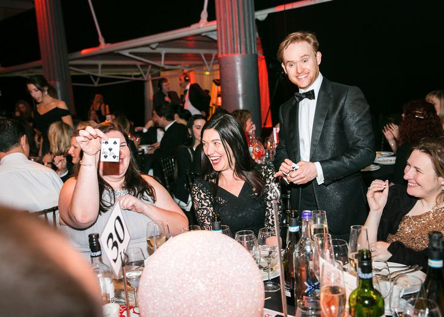
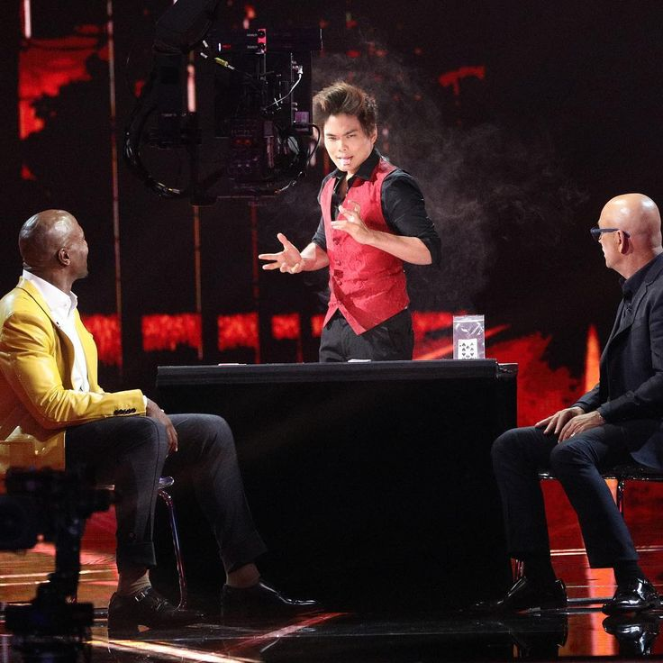

Beneficios del arte de la magia
Habilidades Sociales y Comunicación

- Romper el hielo: La magia es una excusa perfecta para iniciar una conversación con desconocidos
de forma natural y divertida.
- Superación de la timidez: Ayuda a ganar confianza al hablar en público y a expresarse con
seguridad.
- Empatía y conexión: Genera una experiencia compartida de asombro que acerca a las personas.
Desarrollo Cognitivo y Pensamiento Lateral
- Pensamiento crítico: Entender el "mecanismo" o lógica detrás de un efecto entrena la mente para
analizar problemas desde perspectivas insólitas.
- Resolución de problemas: Diseñar la presentación de un truco exige pensar en todos los posibles
imprevistos y soluciones rápidas.
- Memoria y enfoque: Aprender rutinas complejas ejercita la memoria a corto y largo plazo.
Creatividad, Arte y Puesta en Escena

- Expresión artística: La magia no es solo el truco, sino el guion, la música y la actuación.
- Storytelling (Contar historias): Un buen mago envuelve cada efecto en un relato atrapante para
emocionar a su audiencia.
- Diseño visual: Estimula la imaginación al pensar en efectos visualmente impactantes.